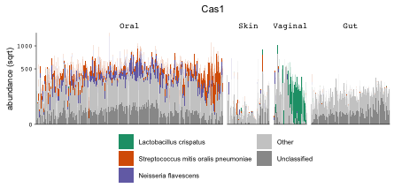

Miscellaneous helper functions mostly for comparative genomics, metagenomics and package development from P. Münch at LMU Munich & Helmholtz Centre for Infection Research.
usage
generation of barplots

Command to generate a figure of a single feature. Set num.bugs = "auto" to automatically adjust the number of bugs needed to show 25% of RA
# generate the sample order
custom.order <-
orderHumannBySimilarity(hmp1_2_metaphlan, distance.method = "bray")
# generate the data used for plotting
dat <-
humann2Barplot(
humann2_table,
metadata = hmp1_2_metadata,
feature = "Cas8",
num.bugs = "auto",
order.by = "custom",
custom.order = custom.order
)
# generate the plot
p <-
makeHumann2Barplot(
dat,
last.plot = p,
hide.legend = F,
scale = "pseudolog",
space = "fixed",
)
# show figure
print(p$gplot)and to plot multiple features in one figure
cas_plots <- vector('list', 10)
for (cas in paste0("Cas", 1:10)) {
cas_plots[[cas]] <- local({
dat <-
humann2Barplot(
humann2_table,
metadata = hmp1_2_metadata,
feature = cas,
num.bugs = "auto",
num.bugs.explained.fraction = 0.35,
order.by = "custom",
custom.order = custom.order
)
p <-
makeHumann2Barplot(
dat,
last.plot = p,
hide.legend = F,
scale = "pseudolog",
space = "fixed"
)
print(p$gplot)
})
}
pdf("all_cas_35_color3.pdf", width = 8, height = 9)
print(multiplot(plotlist = cas_plots, cols = 2))
dev.off()License and copyright
Copyright 2019 Philipp Münch
Source code to PMtools is made available under the terms of the GNU Affero General Public License (AGPL). PMtools is distributed in the hope that it will be useful, but WITHOUT ANY WARRANTY; without even the implied warranty of MERCHANTABILITY or FITNESS FOR A PARTICULAR PURPOSE. See the GNU Affero General Public License for more details.